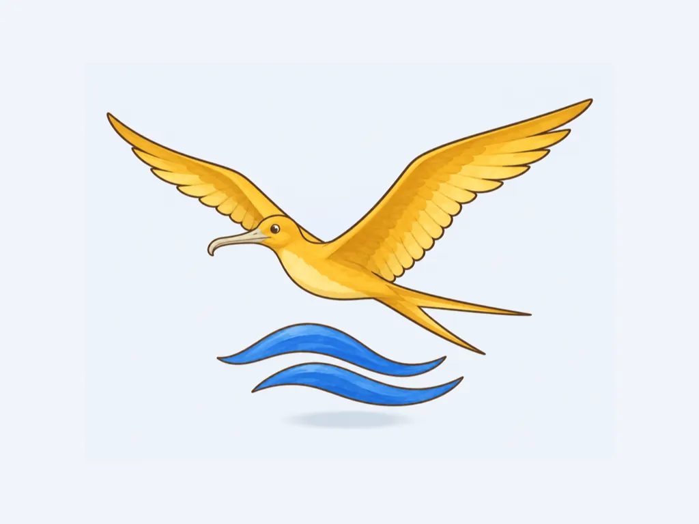
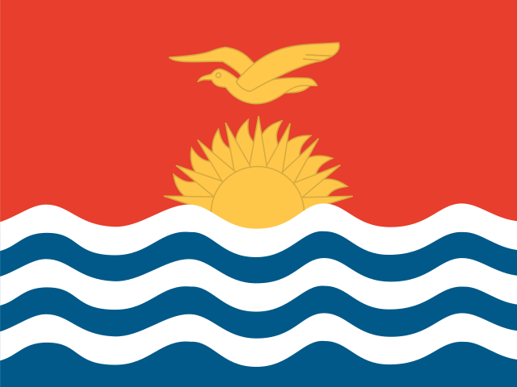
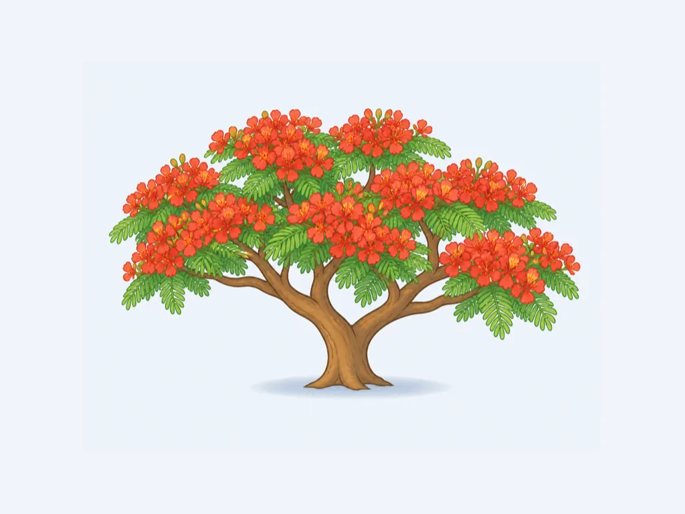
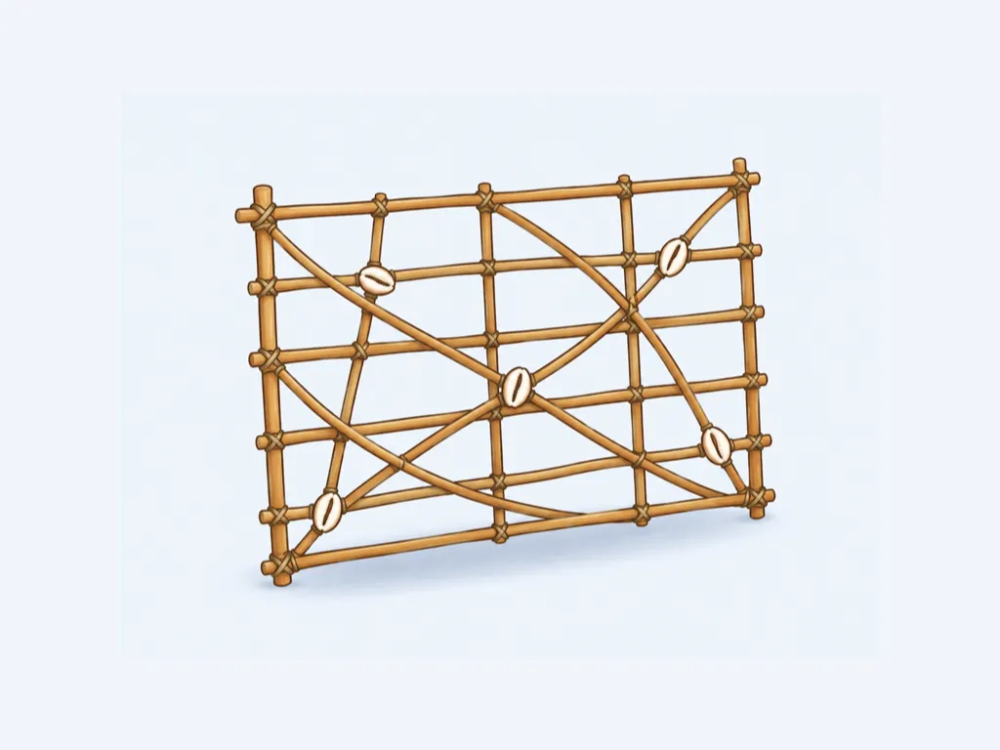
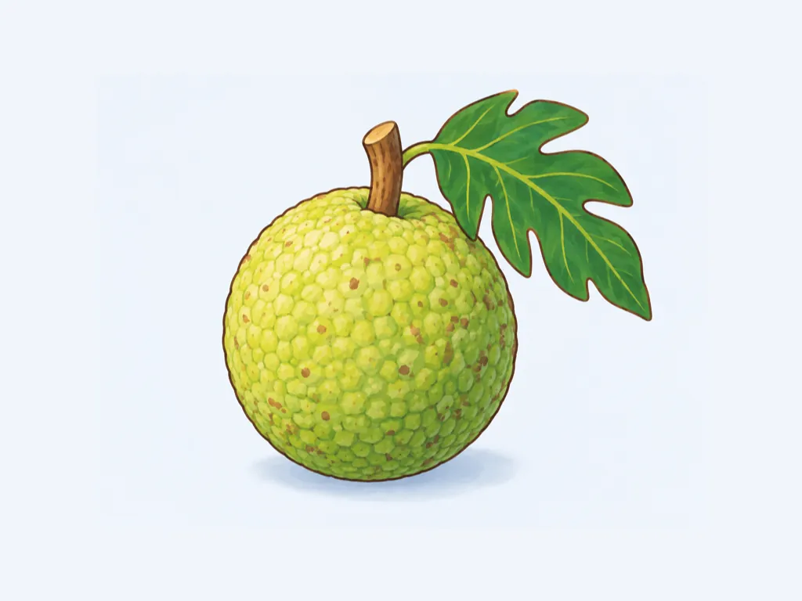
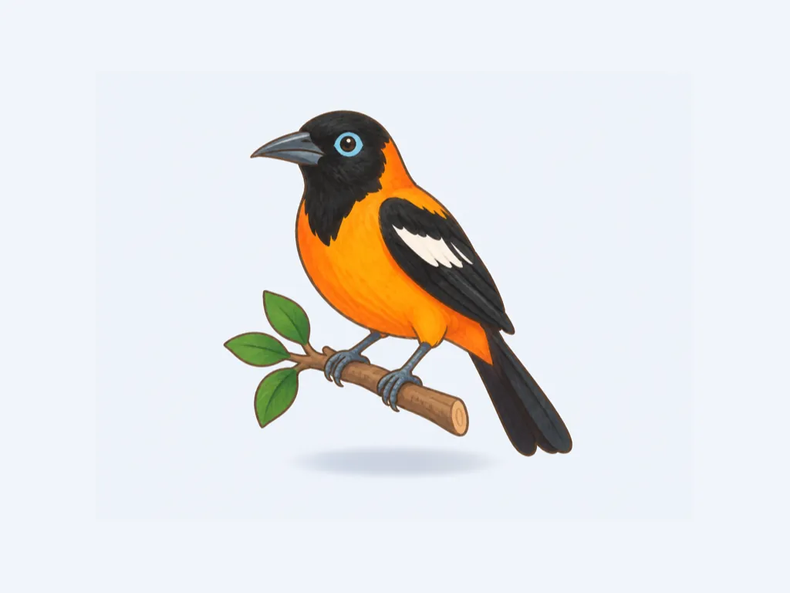
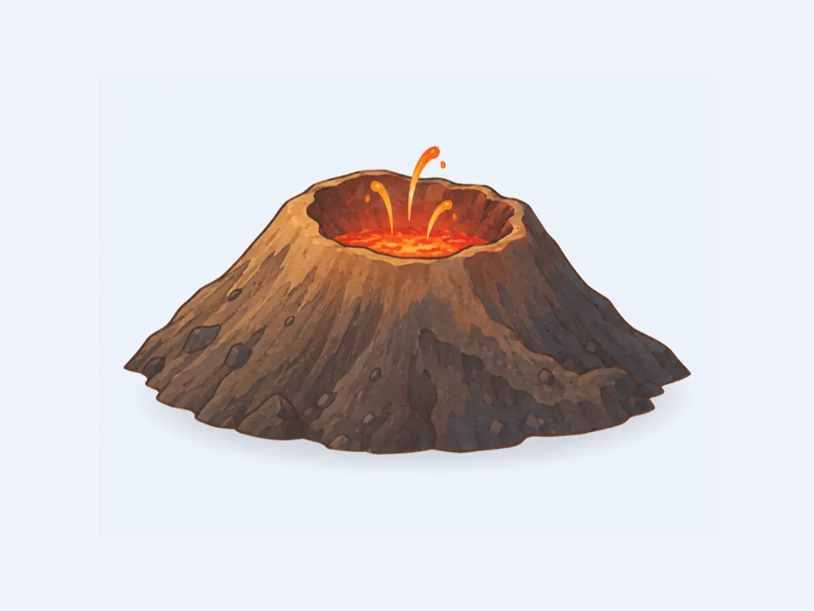
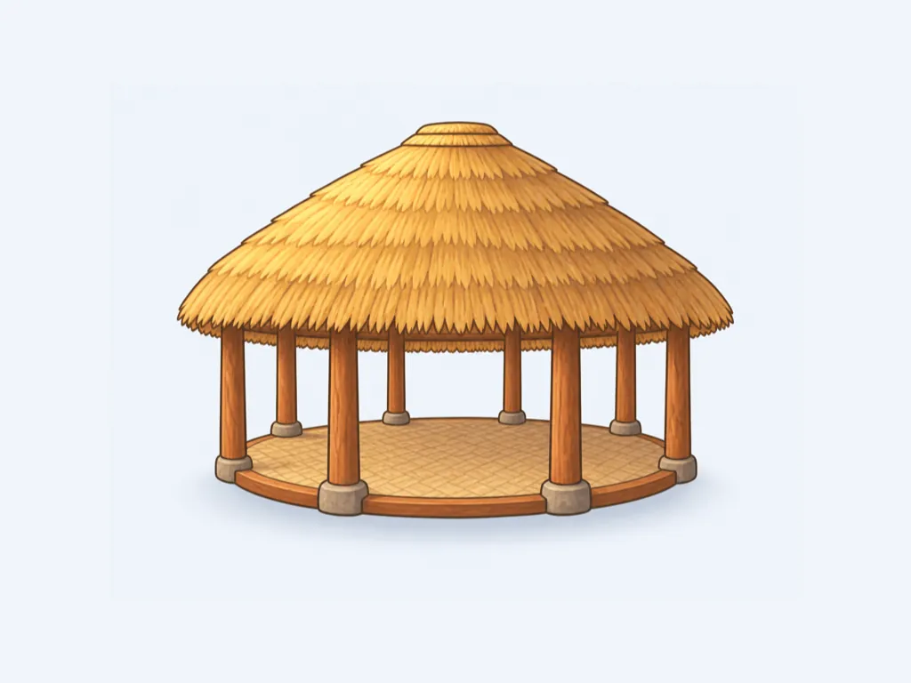

ki
ki 국기ki
ki 국기

knkn 국기
lc
 lc 국기
lc 국기
mhmh 국기
 mx
mx mx 국기
mx 국기 mxmx 국기
mxmx 국기 ni
ni ni 국기
ni 국기 nini 국기
nini 국기 nr
nr nr 국기
nr 국기 nrnr 국기
nrnr 국기 nz
nz nz 국기
nz 국기 nznz 국기
nznz 국기 pa
pa pa 국기
pa 국기 papa 국기
papa 국기 pe
pe pe 국기
pe 국기 pepe 국기
pepe 국기 pg
pg pg 국기
pg 국기 pw
pw pw 국기
pw 국기 pwpw 국기
pwpw 국기 py
py py 국기
py 국기 sb
sb sb 국기
sb 국기 sbsb 국기
sbsb 국기 sr
sr sr 국기
sr 국기 sv
sv sv 국기
sv 국기 svsv 국기
svsv 국기 to
to to 국기
to 국기 toto 국기
toto 국기 tt
tt tt 국기
tt 국기 tv
tv tv 국기
tv 국기 tvtv 국기
tvtv 국기 us
us us 국기
us 국기 usus 국기
usus 국기 uy
uy uy 국기
uy 국기
vcvc 국기

veve 국기
ve
ve 국기
vu
 vu 국기
vu 국기
vuvu 국기
ws ws 국기
ws 국기